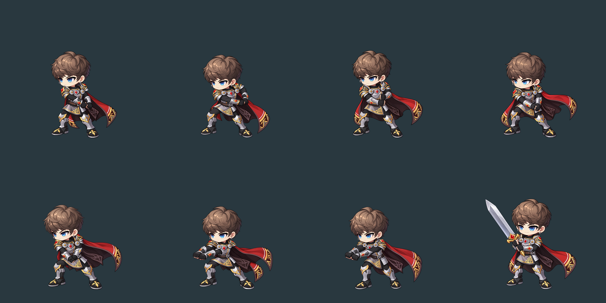
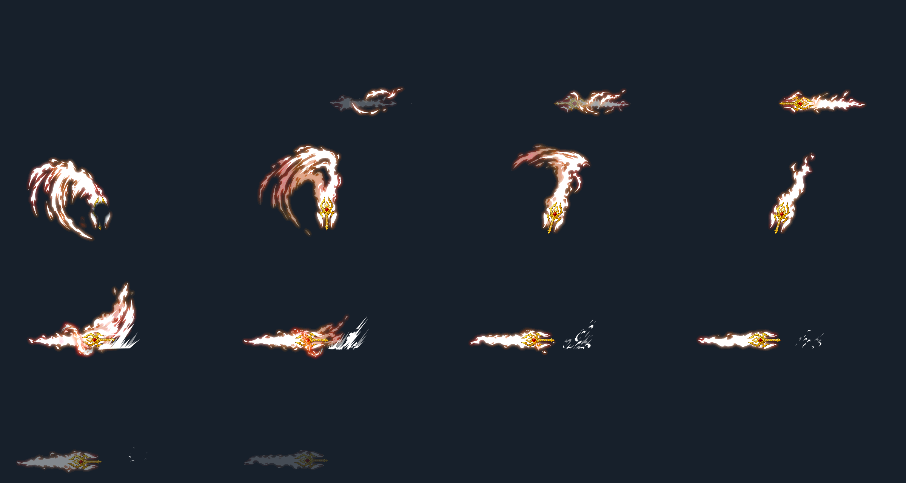

일반 레이징 블로우 8장 · 준비와 연결 자세, 회수 동작 추가
원본 이펙트 14프레임을 손잡이 위치에 맞춰 합성한 모션 연구입니다. 공격 0.78초 + 회수 0.12초 후 대기로 돌아옵니다. 이펙트를 끄면 검 없는 공격 원화를 확인할 수 있습니다. 게임 적용 전이며, 현재 게임의 고정 위치·크기를 재현한 화면은 아닙니다.

왼쪽 위부터 14프레임. 원본 텍스처 크기와 피벗을 보존한 시트입니다.

아래 → 위 · 위 → 아래 · 찌르기
기존 4장 유지 · 별도 비교